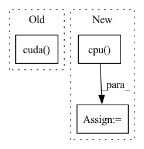

Pattern ID :41996
Before Change
if self.use_cuda:
mixture = mixture.cuda()
target = target.cuda()
latent = latent.cuda()
mixture_amplitude = torch.abs(mixture)
targets_amplitude = torch.abs(target)
After Change
scale = scale[0]
mixture = mixture[0].cpu() // -> (2, n_bins, n_frames)
mixture_amplitude = mixture_amplitude[0].cpu() // -> (2, n_bins, n_frames)
estimated_target_amplitude = estimated_target_amplitude[0].cpu() // -> (2, n_bins, n_frames)
ratio = estimated_target_amplitude / mixture_amplitude
estimated_source = ratio * mixture // -> (2, n_bins, n_frames)In pattern: SUPERPATTERN
Frequency: 3
Non-data size: 3
Instances Fragment ID: 117727959
Project Name: tky823/dnn-based_source_separation
Commit Name: b6c8dc9144d06bdf1353a5ef74ef111c1ec83179
Time: 2021-06-11
Author: 40362510+tky823@users.noreply.github.com
File Name: egs/musdb18/cunet/src/adhoc_driver.py
M Class Name: AdhocTrainer
N Class Name: AdhocTrainer
M Method Name: run_one_epoch_eval(2)
N Method Name: run_one_epoch_eval(2)
M Parent Class: TrainerBase
N Parent Class: TrainerBase
M File Name: egs/musdb18/cunet/src/adhoc_driver.py
N File Name: egs/musdb18/cunet/src/adhoc_driver.py
M Start Line: 176
M End Line: 211
N Start Line: 182
N End Line: 213
Before Change
img, ratio = preproc(img, self.test_size, self.rgb_means, self.std)
img_info["ratio"] = ratio
img = torch.from_numpy(img).unsqueeze(0).cuda()
with torch.no_grad():
t0 = time.time()
outputs = self.model(img)After Change
if self.decoder is not None:
outputs = self.decoder(outputs, dtype=outputs.type())
if self.device == "gpu":
outputs = outputs.cpu() .numpy()
outputs = postprocess(
outputs, self.num_classes, self.confthre, self.nmsthre
) Fragment ID: 117727953
Project Name: megvii-basedetection/yolox
Commit Name: 83d87ba0fafc10e028ff6bc7346ff127b304f391
Time: 2021-07-22
Author: gezheng121@foxmail.com
File Name: tools/demo.py
M Class Name: Predictor
N Class Name: Predictor
M Method Name: inference(2)
N Method Name: inference(2)
M Parent Class: object
N Parent Class: object
M File Name: tools/demo.py
N File Name: tools/demo.py
M Start Line: 118
M End Line: 118
N Start Line: 119
N End Line: 130
Before Change
save_path = os.path.join(self.save_dir, save_filename)
network.save(save_path)
if gpu_ids and torch.cuda.is_available():
network.cuda( gpu_ids[0])
// helper loading function that can be used by subclasses
def load_network(self, network, network_label, epoch):
save_filename = "%d_net_%s" % (epoch, network_label)After Change
network = network.module
state_dict = network.state_dict()
for key, param in state_dict.items():
state_dict[key] = param.cpu()
torch.save(state_dict, save_path)
def load_network(self, load_path, network, strict=True):
if isinstance(network, nn.DataParallel): Fragment ID: 117727964
Project Name: janspiry/distributed-pytorch-template
Commit Name: 37e0ca8cb78b4f18bf00a8881a479a0c9e582a8c
Time: 2022-01-29
Author: lw_jiang@foxmail.com
File Name: models/base_model.py
M Class Name: BaseModel
N Class Name: BaseModel
M Method Name: save_network(4)
N Method Name: save_network(5)
M Parent Class:
N Parent Class:
M File Name: models/base_model.py
N File Name: models/base_model.py
M Start Line: 42
M End Line: 50
N Start Line: 61
N End Line: 68